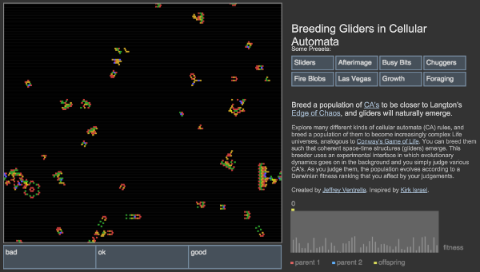

| Click and drag to add new cells |
|
Earth Day 2015 Spherical Cellular Automata Animation by Jeffrey Ventrella |
|
Cellular Earth Animation
The animation above was created as a celebration of Earth Day. It is updated from a version created in 2009. On a fast computer it should run at about 30 fames per second. This is a spherical grid of Cellular Automata . Cellular automata are typically arranged on a Cartesian grid in 1, 2, or 3 dimensions, which makes it easy to compute neighbor-cell interactions. This animation uses a spherical model, which represents a non-Euclidean. surface of positive curvature. The propagation of dynamical patterns happens in-the-round, including the unseen back-side of the sphere. The cell positions are arranged on the sphere as follows: First, twelve points are arranged in a regular, icosahedral pattern. Then a method for increasing the geodesic frequency is applied, whereby every pair of neighboring points gives birth to a new point lying in-between the pair. This increases the number of points to 42. This process is repeated five times to make a total of 10242 points. This is equivalent to the recursive subdivision of the triangles of an icosahedron to generate a geodesic dome. |
Unlike on a flat surface, points on a sphere do not tessellate with perfect regularity. This is illustrated by the geometry of geodesic domes, in which twelve of the vertices have five connecting neighbor vertices, while all others have six. The resulting regions of five-fold symmetry correspond to the twelve vertices of the icosahedron. Dymaxion map Buckminster Fuller's Dymaxion Map provides a way for a flat image of Earth's continents to be mapped onto a sphere with less distortion than standard mappings such as the Mercator Projection 
There are of course other ways to construct a geodesic dome, based on the octahedron, tetrahedron, cube, etc. But geodesic subdivision which is based on icosahedral symmetry provides the least distortion in the regions of the "pinch points", where spherical curvature is manifested as discontinuities in the grid. |
|
Neighborhoods
The Game of Life is the most well-known cellular automaton, which uses an 8-cell neighborhood. But hexagonal grids can also be used in cellular automata. In this spherical model, every neighborhood has either 5 or 6 cells - each cell corresponding to a point (vertex) on the geodesic surface. Neighborhoods are calculated based on proximity of points after each step of increasing the geodesic frequency. When the final geodesic subdivision is finished, the local neighborhood of each cell is stored in memory. This is used to apply the cellular automata rules. |
The Rules
The interesting thing about cellular automata is the rules - the manner in which cells change their states as a function of the states of their neighbors (and themselves). The rules in this technique are described in the following: Glider Dynamics on the Sphere: Exploring Cellular Automata on Geodesic Grids Glider Dynamics on the Sphere These rules are similar to those described in "Gliders and Riders", a chapter in the book, Stigmergic Optimization. Here is a Java applet showing this technique. More details on this rule system are published in the Artificial Life X conference proceedings in 2006. |
|
Evolving Rules
The rules are represented as a set of parameters - "genes" - and evolved using a genetic algorithm. To find rules which create interesting space-time patterns, the genetic algorithm has an interactive component, such that a human can provide the fitness metric. A random population of individuals (represented as cellular automata rules) are generated. Then the results of randomly-selected rules are viewed and ranked as either good or bad. While the cellular automaton is running, at semi-regular intervals, randomly chosen cells have their states randomly changed. This provides some stimulation, so that interesting dynamics can emerge. The individuals with a good rating have a higher chance of mating with other high-ranking individuals, using crossover and mutation. The fitness values of the entire population are decayed over time, with each viewing, so that aesthetic trends that may have been ranked high in the past are allowed to fade (if they have been given a good ranking, then their genes have already propagated into the present population anyway). This technique was also used to evolve 2D Cellular automata. |
Artistic Motivation
One interpretation of the Gaia Hypothesis is that the Earth is not just a complex ecosystem: it is a super-organism. Earth has a protective atmosphere with an unlikely balance of gases which can only be explained by way of some self-regulating system. Earth's biosphere is self-organizing and works in such a way as to keep its systems in some kind of meta- equilibrium, broadly conducive to life. Cellular automata appeal to the eye and mind. The dynamical movement can be visually striking, evoking the chaotic churn of life. Small narratives emerge from the primordial soup, and sometimes reveal a bigger story. The creation of this sphere of cellular automata - rendered in Earth tones - is a way for me to share my vision of Earth as a delicate sphere of interacting cells. Earth is an exquisite super-organism in constant motion. -Jeffrey |
See the Tool for Breeding Gliders

See the Video showing Glider Dynamics on a Geodesic Grid
www.Ventrella.com